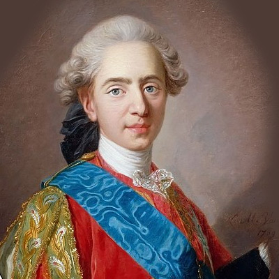
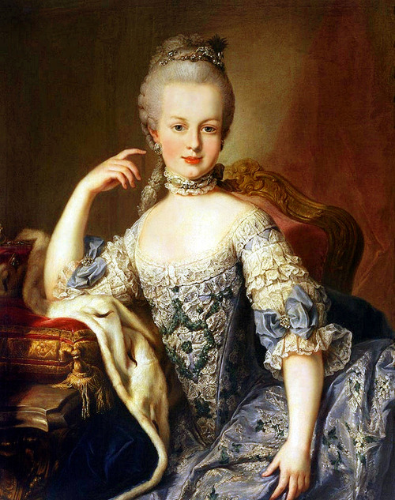

Hello, I'm Louis XVI 🤴

I am passionate about locksmithing and I vetted the machine that was to behead me. Plus, as I love new technologies, I also attended the first manned hot-air balloon flight in history. Oh and this is me when I was young, I am actually much older! But this portrait is beautiful, isn't it?
If you ever want to do a little tour of my house
My Wife 👸

Marie-Antoinette of Austria
Yes, she is pretty too! I know what you are thinking: what a beautiful couple they were making! Well, it was a bit complicated between us, but it is still a shame that we were beheaded...
Other Special Facts About Me 👑
- I am the Direct Representative of God (yeah this is dope).
- My wedding ended with a deadly stampede (nearly 130 casualties). I was very shocked and decided to help the victims' families.
- It took seven years for my marriage with Marie-Antoinette to be finally consummated. It turned out that a genital malformation seemed to be the cause of my incapacity to fulfill my duty.
Our Dates 📜
- I was born in 1754 and she was born in 1755. We were only one year apart!
- We got married in 1770, 2 days after we first met. We were 16 and 15 respectively.
- We became King and Queen of France in 1774 after the passing of my grandfather Louis XV.
- We were unfortunately guillotined. Me in January 1793 and her in October 1793. In any case, when I approved this wonderful machine, I was right to think that it avoids suffering.